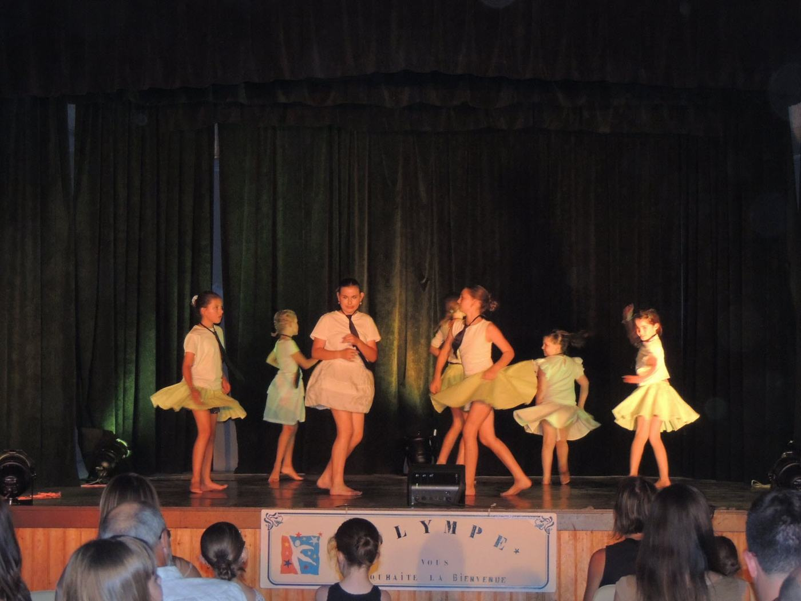
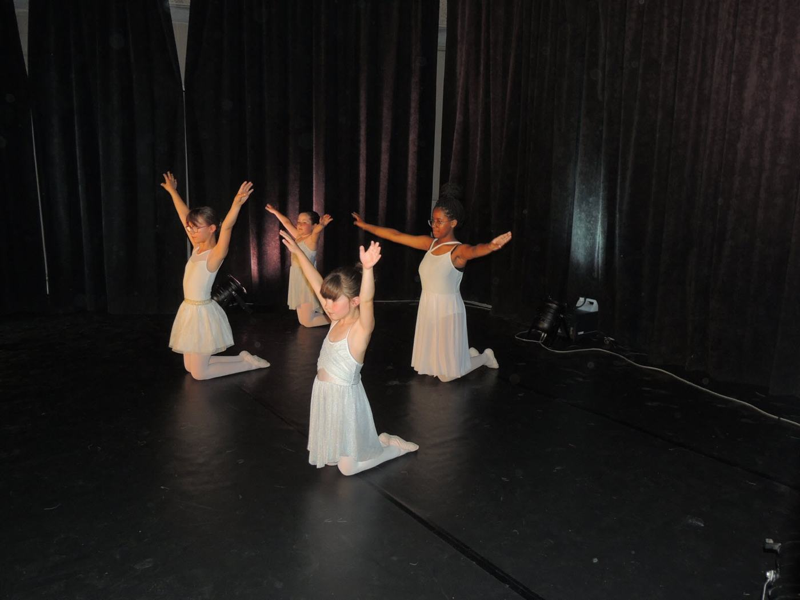
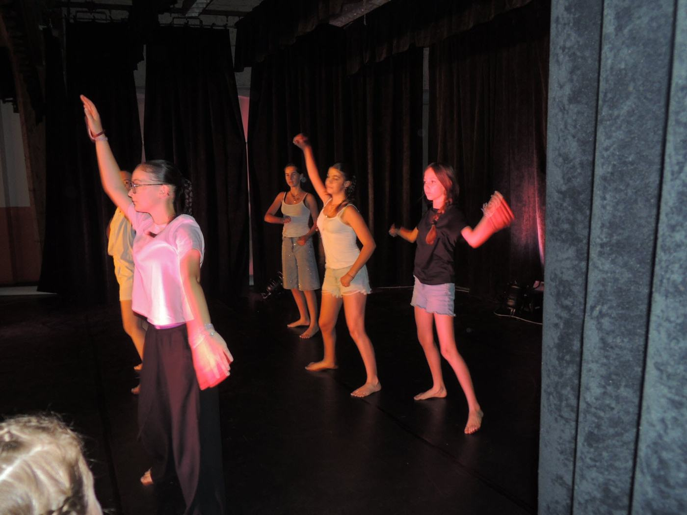
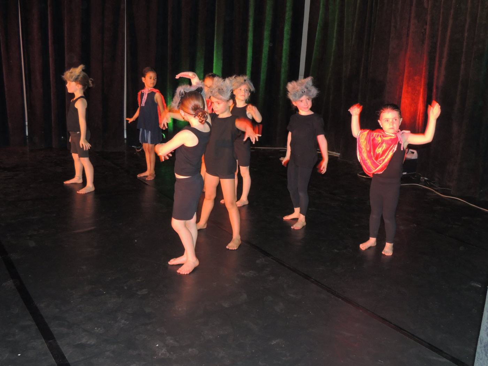
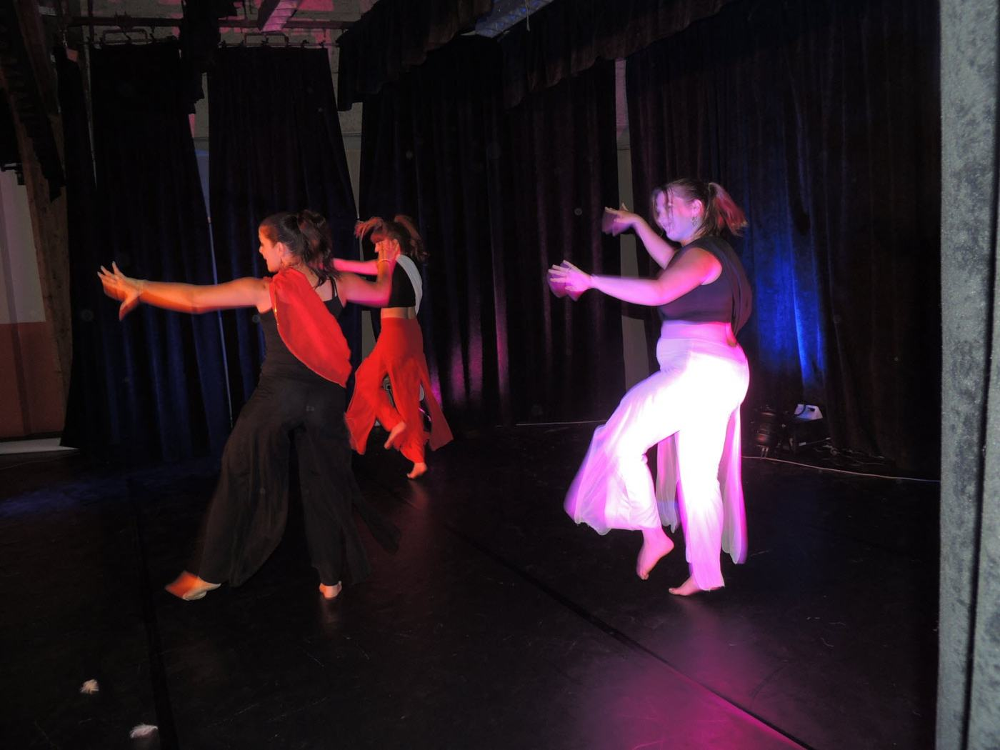
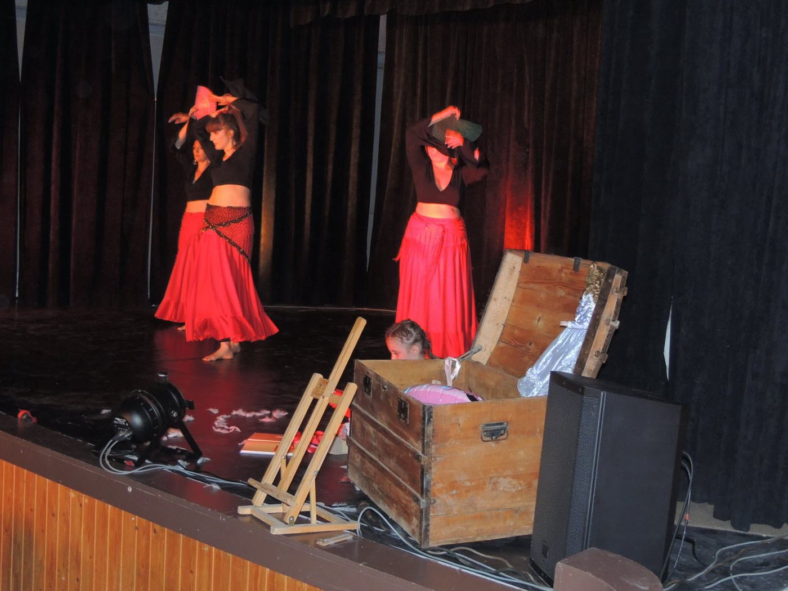
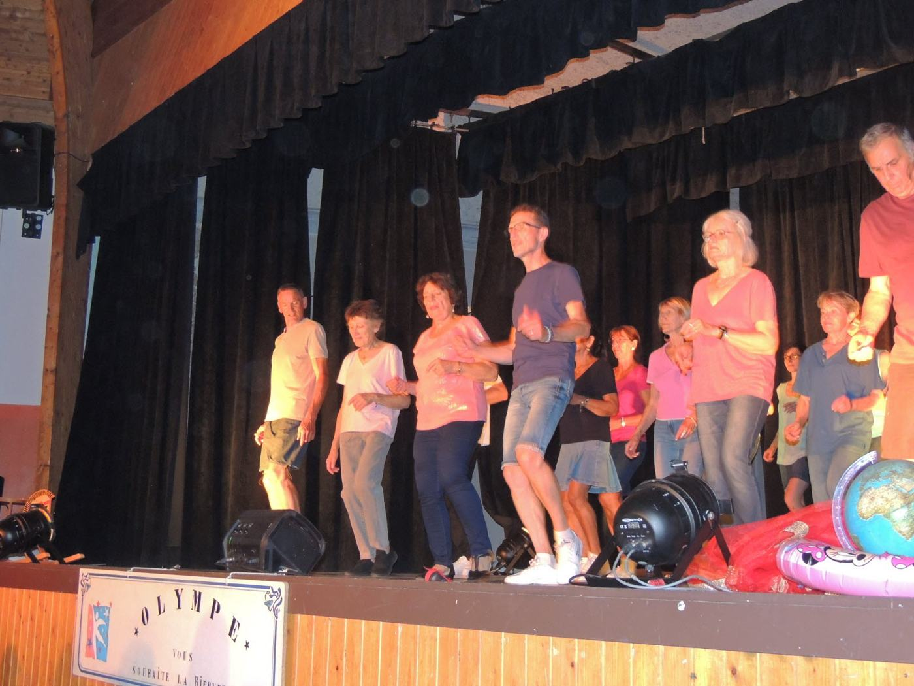

Dès 4 ansDès 4 ans
Éveil à la danse
Premiers pas en musique : découvrir son corps, le rythme et le plaisir de danser avec les autres.
Des premiers pas des tout-petits aux cours d’adultes : trouvez le vôtre.
Danse, bien-être, remise en forme : à Olympe, chacun trouve son rythme. L’offre exacte peut varier d’une saison à l’autre — demandez-nous la liste à jour.

Dès 4 ansPremiers pas en musique : découvrir son corps, le rythme et le plaisir de danser avec les autres.

ClassiquePosture, grâce, musicalité : les bases de la danse classique, à partir de 7 ans.

JazzÉnergie, souplesse et expression sur des musiques d’aujourd’hui — enfants, ados et adultes.

Hip-hopRythme, groove et créativité en groupe, avec des cours selon les tranches d’âge.

FusionUn mélange de styles pour inventer ses propres chorégraphies — enfants et adultes.

VoyageIsraël, Irlande et bien d’autres : voyager sur des rythmes venus d’ailleurs.

ConvivialitéDes enchaînements en rangs, sans partenaire, dans la bonne humeur.
Respirer, s’étirer, se recentrer : un moment de calme dans la semaine.
Renforcer le centre du corps en douceur ou plus dynamique, avec deux créneaux le mercredi soir.
Se dépenser, tonifier ses muscles et se détendre, sans pression.
À préciser par l’associationHoraires de la saison 2026-2027 : à confirmer auprès de Martine Agostini. Le tableau ci-dessous rappelle l’affiche de la saison 2025-2026 (reprise le lundi 15 septembre 2025) à titre indicatif.
| Jour | Activité | Public | Horaire | Lieu |
|---|---|---|---|---|
| Lundi | Cours ados / adultes | Ados · adultes | 18 h 45 – 19 h 45 | Salle de danse ou Centre social et culturel (à confirmer) |
| Mercredi | Danse classique | 7 ans et plus | 13 h 15 – 14 h 30 | Salle de danse |
| Mercredi | Pilates | Ados · adultes | 18 h 20 – 19 h 20 | Salle de danse |
| Mercredi | Énergie Pilates | Ados · adultes | 19 h 30 – 20 h 30 | Salle de danse |
| Jeudi | Gym détente | Adultes | 17 h 50 – 18 h 50 | Salle de danse |
| Jour à confirmer | Hip-hop | 13 ans et plus | 8 h 45 – 10 h 15 | Salle de danse |
| Jour à confirmer | Hip-hop | 6 – 12 ans | 10 h 25 – 11 h 55 | Salle de danse |
D’après l’affiche « Reprise des activités – saison 2025-2026 » publiée par la mairie. Les autres cours (éveil, modern’jazz, danse fusion, danses du monde, danse en ligne, yoga…) : horaires à demander à l’association.
À préciser par l’associationTarifs de cotisation, pièces à fournir et dates d’inscription : à renseigner.
Les cours reprennent chaque année à la mi-septembre. Les dates de la saison en cours sont à demander à l’association, ou à suivre sur la page Facebook.
Suivre Olympe sur Facebook →Chaque mois de juin, Olympe présente un gala sur un thème nouveau à la salle des fêtes Eugène Vadot, pour mettre en scène le travail de l’année.
Pour l’édition 2026 (« La malle aux souvenirs », 20 juin à 19 h) : 6 € pour les adultes, 3 € pour les enfants de 5 à 14 ans. Places limitées : il est conseillé de réserver.
Revoir le gala 2026 →Une séance d’essai est possible sur simple prise de contact avec Martine Agostini. Venez comme vous êtes : le plaisir de bouger fait le reste.